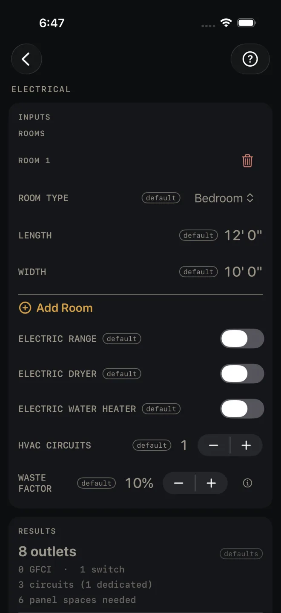
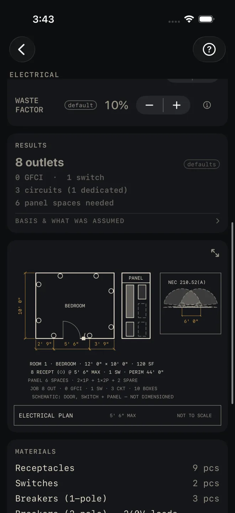
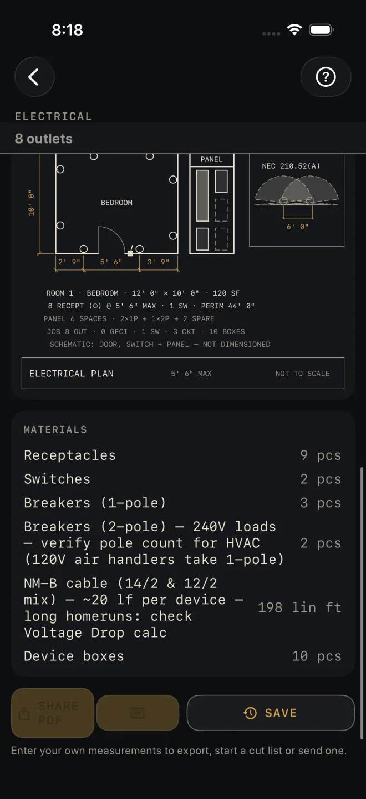

Electrical
What it's for
A rough-in takeoff for pricing and ordering. List the rooms and the big electric appliances, and you get a count of outlets, GFCI outlets, switches, circuits and panel spaces, plus a material list of devices, breakers, cable and boxes. It is an estimate, not a code check: nothing on the results card passes or fails, and the screen does not know where your doors, windows or counters are.
Step by step
The example is the screen as it opens: one 12' 0" × 10' 0" bedroom, no electric appliances, one HVAC circuit.

1 2 3 4 5- ROOM TYPE — pick from Kitchen, Living, Dining, Bedroom, Bathroom, Laundry, Hallway and Garage. The type sets how closely the outlets are spaced, whether they count as GFCI, and how many switches the room gets.
- LENGTH and WIDTH — the room, wall to wall at the floor. The example is 12' 0" by 10' 0". There is no height. Only the perimeter and the floor area are used.
- Tap Add Room for every room on the job. Rooms are numbered, not named. The red bin beside a ROOM heading deletes that room.
- ELECTRIC RANGE, ELECTRIC DRYER and ELECTRIC WATER HEATER — switch on each one the house has. Each adds one dedicated circuit.
- HVAC CIRCUITS — how many dedicated circuits the heating and cooling equipment needs. It opens at 1. Set 0 if there are none.
- WASTE FACTOR — extra to order, in steps of 5%. The example is 10%. It changes the MATERIALS list only, never the counts in RESULTS.
- Read RESULTS: 8 outlets, 0 GFCI · 1 switch, 3 circuits (1 dedicated), 6 panel spaces needed.
- Tap BASIS & WHAT WAS ASSUMED and read it before you price from these counts.
- Scroll down to the plan of ROOM 1 and the panel.
- Read MATERIALS for the order.
Reading the results

7 8 9
10The headline is the total outlets. Each room's perimeter is walked at the spacing for its type, and every room gets at least one.
GFCI and switches. Every outlet in a Kitchen, Bathroom, Laundry or Garage is counted as a GFCI device. Each room gets one switch. A Hallway gets two.
Circuits is general receptacle circuits, plus lighting circuits worked from the floor area, plus the dedicated ones. Kitchens (two each), bathrooms, laundries and garages (one each) set a minimum for the receptacle circuit count. They are not added on top of it. Dedicated is your appliance switches plus HVAC CIRCUITS. In the example the one dedicated circuit is the HVAC.
Panel spaces needed counts two spaces for each dedicated circuit, one for each of the others, and two spare. The drawing spells it out. In the example: PANEL 6 SPACES · 2×1P + 1×2P + 2 SPARE.
BASIS & WHAT WAS ASSUMED opens to one line: Counts run ~2× NEC minimums; all wet-area outlets priced as GFCI devices. So the device counts are generous on purpose, and the GFCI count assumes a GFCI device at every wet-area outlet rather than one device protecting the rest downstream. Trim the order to suit how you wire.
The drawing is a plan of ROOM 1 only, with the outlets as circles around the walls, and a panel schedule beside it. The notes under it give the room, the outlet count and spacing used — 8 RECEPT (○) @ 5' 6" MAX · 1 SW · PERIM 44' 0" in the example — the panel make-up, and the job totals. A note says the door, switch and panel are schematic and not dimensioned. The screen does not know where they are. The boxed inset is headed NEC 210.52(A) and shows the reach between two outlets. Pinch to zoom, drag to move around, double-tap to reset, or tap the expand button at its top right for the whole screen. See Reading the drawing.
MATERIALS is the order with waste added and rounded up: receptacles, GFCI receptacles when there are any, switches, 1-pole and 2-pole breakers, cable and device boxes. Two rows carry their own warnings. The 2-pole breaker row says to verify the pole count for HVAC, because every dedicated circuit is priced as 2-pole. The cable row is a rule of thumb of about 20 lineal feet per device and says to check long homeruns in Voltage Drop.
The buttons wait for your own numbers: the export button stays dimmed, and SAVE tells you to enter them first. After that SHARE PDF shares the plan, the counts, the rooms and the materials, the small list button beside it shares the material list alone, and SAVE puts the result in History. The PDF lists the first ten rooms and says how many more there are. Its footer reads Estimate — verify dimensions and local code before cutting/ordering. Your local code and your inspector govern the real layout.
Common mistakes
- Using the counts as a layout. They come from room size and type alone. Doors, windows, counters and islands move and add devices, and the screen cannot see them.
- Reading the plan as every room. Only ROOM 1 is drawn. The totals in the notes and in RESULTS cover the whole job.
- Picking the wrong ROOM TYPE. A laundry entered as a bedroom loses its GFCI count, and can lose a circuit.
- Ordering 2-pole breakers for 120 V HVAC equipment. The MATERIALS row tells you to verify the pole count. Do it before the order goes in.
Related
- Voltage Drop — check a long run
- Plumbing and Water Heater — the rest of the rough-in
- Reading the drawing
- Cut sheets and templates
- Saving and History